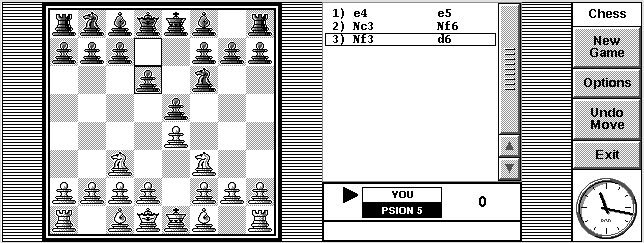
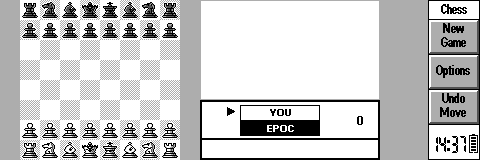

Download PocketChess v 1.2a.
Updated 1/26/2000. PocketChess v1.2 for EPOC is a high quality, full
featured chess playing program for your EPOC handheld computer. This
is the result of a collaboration between Fred
Bouvry, Simon Quinn, Christian
Morency, and myself. Now compatible with the Revo smaller screen!
Download PocketChess v 1.2a.
Updated 1/26/2000. PocketChess v1.2 for EPOC is a high quality, full
featured chess playing program for your EPOC handheld computer. This
is the result of a collaboration between Fred
Bouvry, Simon Quinn, Christian
Morency, and myself. Now compatible with the Revo smaller screen!
 Download PocketChess
v1.2a in .sis format
Download PocketChess
v1.2a in .sis format
 Download
PocketChess v1.2a in zipped non-.sis format
Download
PocketChess v1.2a in zipped non-.sis format
Here is a screenshot:

Here is a screenshot of the Revo size screen:

Awards:
| Best freeware EPOC Game of 1998 as voted by end-users! |
PocketChess was selected into 3-Lib's "A-List", a guide to the very best in Psion software!
 |
5 out of 5 cows from PsionKing! |
Send feedback to the development team.
Please visit PalmTime's site - it has even more software and is a secondary distribution site for PocketChess.
PocketChess v1.2a for EPOC is free - Enjoy!